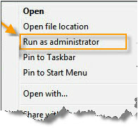

Phần mềm học tiếng Anh
Grammar được gọi tắt là G.
Hiện tại phiên bản G phải từ G 3.1 trở lên. Khi cài xong sẽ có bảng cảnh báo chỉ rõ trang chủ của G là TuHocG.Weebly.com.
G đã được quét cẩn thận từ rất nhiều trình nổi tiếng. Một số trình nhận lầm G có virus là do sự lầm lẫn mà thôi. Tóm lại, cách duy nhất và an toàn nhất là phải download từ trang chủ của G.
Những ai dùng win 10 thì phải Cập nhật win 10 đầy đủ trước khi cài Grammar.
Lỗi 339 thường là do dùng win 10 nhưng chưa Active và chưa Update..
Dùng Trình DefenderControl hoặc các trình tương tự để tắt Defender của win trước khi tải và cài đặt.
Hiện tại phiên bản G phải từ G 3.1 trở lên. Khi cài xong sẽ có bảng cảnh báo chỉ rõ trang chủ của G là TuHocG.Weebly.com.
G đã được quét cẩn thận từ rất nhiều trình nổi tiếng. Một số trình nhận lầm G có virus là do sự lầm lẫn mà thôi. Tóm lại, cách duy nhất và an toàn nhất là phải download từ trang chủ của G.
Những ai dùng win 10 thì phải Cập nhật win 10 đầy đủ trước khi cài Grammar.
Lỗi 339 thường là do dùng win 10 nhưng chưa Active và chưa Update..
Dùng Trình DefenderControl hoặc các trình tương tự để tắt Defender của win trước khi tải và cài đặt.
Lưu ý Chung:
Hướng dẫn này chỉ dành cho phiên bản mới trở đi. Download Grammar 3.1 phiên bản mới ở đây
Ngoài ra G còn có rất nhiều Video dạy luyện NGHE. Các bạn vào đây để biết thêm chi tiết: Luyện NGHE Video
Cách Cài đặt G với win 7, 8, 8.1, 10
Hướng dẫn này chỉ dành cho phiên bản mới trở đi. Download Grammar 3.1 phiên bản mới ở đây
- Chương trình Grammar 3.1 hiện tại gồm 2 đĩa.
- Đã test Grammar chạy tốt ở tất cả các win từ win XP đến win 10 (32,64 bit).
- Sau khi tải về, phải cài theo thứ tự từ File setup 1 đến 2.
- Tạm tắt trình diệt virus, trình DeepFree, Registry Reviver, Advanced system care hoặc tất cả chương trình nào có liên quan đến Registry. Một số trình diệt Virus nhận lầm G là virus và khóa các file setup của G.
- Không đặt tên thư mục bằng tiếng Việt có dấu vì sẽ gặp lỗi 429, 76...
- Khi mới cài Windows, bạn nhớ mở chiếu và nghe thử video và file Mp3 (bất cứ file nào) để kích hoạt windows Media player trước khi chạy G.
- Sau khi cài G xong, vào thư mục Grammar\Fonts, copy tất cả các file font trong đó vào C:\Windows\Fonts. Trường hợp máy bạn có cài trình tera copy thì nó có thể sẽ che không cho win cập nhật font mới. Vì vậy bạn hãy vào Control Panel, Fonts, nhấp thẻ File, Install new fonts, trỏ đường dẫn ở ô Drives vào thư mục fonts của G và tiến hành cập nhật font mới.
- Bản Windows 10 1903 là bản lỗi nặng không thể sửa được. Bản này và một số bản bị mất Windows Media Player và không thể phục hồi. Hậu quả là cài G luôn báo lỗi 339. Nhấn chuột phải vào file âm thanh Mp3, trong mục Open With nếu không thấy mục Windows Media Player thì nên chọn cài bản win khác. Còn nếu thấy thì hãy kích hoạt Windows Media Player.
Ngoài ra G còn có rất nhiều Video dạy luyện NGHE. Các bạn vào đây để biết thêm chi tiết: Luyện NGHE Video
Cách Cài đặt G với win 7, 8, 8.1, 10

Bật quyền Administrator cho win xem trang này để biết cách:
http://www.thongtincongnghe.com/node/27766
Không nhấn cùng lúc 2 file setup. Nhấn chuột phải vào file Setup1 và chọn Run As Administrator. Đợi khoảng 40 giây để máy tính bung gói cài đặt:
http://www.thongtincongnghe.com/node/27766
Không nhấn cùng lúc 2 file setup. Nhấn chuột phải vào file Setup1 và chọn Run As Administrator. Đợi khoảng 40 giây để máy tính bung gói cài đặt:
Bất cứ khi nào gặp bảng này
bung ra thì kéo nút xuống chỗ Never
notify như sau:
Nếu ổ C lớn hoặc bạn muốn cài Grammar ở ổ C thì chỉ việc nhấn Next.
Muốn cài Grammar ở ổ D thì sửa C:\Grammar thành D:\Grammar, xong nhấn Next:
Khi chạy xong đĩa 1, máy sẽ không báo gì cả. Nên bạn phải tiếp tục cài đĩa 2, thao tác như đĩa 1.
Trong khi máy đang cài đặt đĩa 1, một bảng tiếp theo có thể sẽ bật ra với tiêu đề: Nextup-Acapela BrightSpeech Ryan22 US English Voice. Nếu trước đây máy bạn đã từng cài trình này rồi thì nhấn Cancel, Yes, Finish. Nếu máy bạn chưa từng cài trình này thì nhấn Next, chọn mục I accept the terms in the license agreement, Next, Next, Install, Finish. Không được chỉnh sửa đường dẫn mặc định.
Trong khi máy đang cài đặt đĩa 1, một bảng tiếp theo có thể sẽ bật ra với tiêu đề: Nextup-Acapela BrightSpeech Ryan22 US English Voice. Nếu trước đây máy bạn đã từng cài trình này rồi thì nhấn Cancel, Yes, Finish. Nếu máy bạn chưa từng cài trình này thì nhấn Next, chọn mục I accept the terms in the license agreement, Next, Next, Install, Finish. Không được chỉnh sửa đường dẫn mặc định.
Xong, vào thư mục Grammar\Fonts, copy tất cả các file font trong đó vào C:\Windows\Fonts. Trường hợp máy bạn có cài trình tera copy thì nó có thể sẽ che không cho win cập nhật font mới. Vì vậy bạn hãy vào Control Panel, Fonts, nhấp thẻ File, Install new fonts, trỏ đường dẫn ở ô Drives vào thư mục fonts của G và tiến hành cập nhật font mới.
Tiếp theo đối với win 7, 8, 10 thì làm các bước:
(1) Chọn tất cả các file trong thư mục Grammar\Fonts: nhấn chuột phải vào đó rồi chọn install (nếu nó có chức năng này). Nếu không thì vào thư mục Grammar\Fonts, copy tất cả các file font trong đó vào C:\Windows(x86)\Fonts
(2) Nhấn chuột phải vào file Grammar\Grammar.exe, chọn Properties, Compatibility, chọn 2 mục, như sau:
Tiếp theo đối với win 7, 8, 10 thì làm các bước:
(1) Chọn tất cả các file trong thư mục Grammar\Fonts: nhấn chuột phải vào đó rồi chọn install (nếu nó có chức năng này). Nếu không thì vào thư mục Grammar\Fonts, copy tất cả các file font trong đó vào C:\Windows(x86)\Fonts
(2) Nhấn chuột phải vào file Grammar\Grammar.exe, chọn Properties, Compatibility, chọn 2 mục, như sau:
(3) Vào tiếp thẻ Security, Edit rồi chọn Full Control lần lượt cho tất cả các dòng:
(4) Với win 7,8,10 để xử lý triệt để, sau khi chạy G 2 lần, bạn dán vào ô địa chỉ của trình windows explorer dòng chữ sau đây:
C:\ProgramData\Microsoft\Windows\Start Menu\Programs\StartUp
hoặc gõ vào ô search: Testk hoặc Testk0
Nếu thấy file Testk hoặc Testk0 hiện ra, bạn làm nó theo bước (2) ở trên.
(5) Cuối cùng ở màn hình chính (desktop), nhấn chuột phải vào biểu tượng Grammar, chọn Run As Administrator để chạy chương trình.
Xử lý các lỗi:
Chú ý: Nếu dùng máy bàn + win 10 thì bạn phải cắm Headphone hoặc loa vào thùng máy. Nếu không thì win 10 tự tắt các trình âm thanh và làm cho Grammar bị lỗi không khởi động được giọng đọc. Khi đó G sẽ bật bảng yêu cầu bạn chạy File AAA.exe liên tục.
(1) Khi gặp lỗi 0 thì làm như sau:
Lỗi này là do bạn không làm đúng theo hướng dẫn.
Xóa đĩa 1 . Tải lại đĩa 1 từ web này. Tắt các trình diệt virus. Tắt chương trình Advanced system care khởi động cùng windows hoặc tất cả chương trình nào có liên quan đến chữ Registry. Cài lại đĩa 1
(2) Khi gặp lỗi -2147200967 hoặc trường hợp G luôn bật bảng đếm giây hoặc không nghe giọng đọc thì làm như sau:
Lỗi này là do bạn không làm đúng theo hướng dẫn.
Tắt các trình diệt virus. Tắt chương trình Advanced system care khởi động cùng windows hoặc tất cả chương trình nào có liên quan đến chữ Registry. Xóa thư mục C:\Program Files\Nextup Acapela\Bin. Chạy file AAA.exe.
Trường hợp chạy File AAA.exe bị báo lỗi 6 over flow, hoặc file AAA chạy rất lâu thì thoát nó ra và làm thủ công như sau: (Chú ý: Thao tác này chỉ dành cho những người biết vi tính.)
+ Vào Run gõ Regedit, Find, gõ speechparam
+ Xóa thư mục này rồi tìm và xóa tiếp cho đến khi sạch chúng.
Kiểm tra biểu tượng cái loa. Nếu có dấu X thì click vào để bật loa trở lại. Nếu không thể bật được loa tức là máy bạn chưa cài driver sound. Khi đó thực hiện bước số (5)
(3) Lỗi 339 Làm thao tác của bước (1) đã nêu.
(4) Có trường hợp máy bạn cài trình Tera copy và đôi khi nó vô hiệu hóa việc copy các font G vào system. Khi đó bạn phải mở C:\windows\Fonts, File, Install New Font, Drives: trỏ đường dẫn vào thư mục chứa Font G để tiến hành cài Font.
(5) Những máy mới mua về thường cài thiếu Driver. Một số bạn chưa cài driver cho máy đã vội cài G. Hậu quả là không nghe được âm thanh hoặc G cứ báo lỗi. Các bạn nên mua đĩa driver pack solution về cài driver đầy đủ (nhưng đừng cài trình toughpad). Nếu không thì sẽ gặp nhiều lỗi nữa. Xem thêm lỗi (12)
(6) Dòng máy laptop Dell Precision core 2 sản xuất bị lỗi với trình G và một số trình khác. Nếu nhấn chuột phải hoặc trái bằng mouse của laptop thì sẽ không tra được từ vựng và câu. Nếu dùng mouse rời thì vẫn bình thường. Đây là lỗi do cài trình toughpad. Gỡ chúng ra là xong.
(7) Đặc biệt một số máy cài Game hoặc trình cờ tướng, Liên Minh... hoặc đã chỉnh sửa trong Control Panel mục Regional and language Option thì phải chỉnh lại như cũ, tức: English (United States), United States. Nếu không thì sẽ bị lỗi Font mặc dù đã add Font cẩn thận.
(8) Muốn xóa G để cài lại thì chỉ cần xóa thư mục C:\Grammar.
(9) Gặp lỗi 372, 339 hoặc do bạn dùng ghost đa cấu hình Window Media bị hư hoặc chưa mở nghe thử 1 file nhạc để khởi động Window Media, hoặc G cài trình codec liên tục, khi đó vào trang này để khắc phục:
https://support.microsoft.com/vi-vn/mats/windows_media_player_diagnostic/vi-vn
Hoặc
- Mở windows Media, tool, option,
Trong Player, chọn ô: Download Codecs automatically
Trong File type chọn windows Audio file (Wav), Mp3 auio file (Mp3)
Kết nối internet để win tiến hành cập nhật
(10) Lỗi treo logo Grammar sau khi update win10 bản 1709 lên 1803: Vào Control Panel, Programs and Features chọn NextUp-Acapela Brightspeech Ryan22 US english Voice. Gỡ bỏ nó đi. Xong khởi động Grammar 3.1. Đợi để win tự động cập nhật (chậm nhanh tùy theo cấu hình máy). Chạy File AAA.exe trong thư mục Grammar. Xong mở lại Grammar bình thường. Nếu thấy mất giọng đọc Ryan thì cài lại giọng Ryan (File Ryan) trong thư mục Grammar.
(11) Khi đang mở mục Nghe Viết hoặc Điền từ thì phải tạm chỉnh trình gõ tiếng Việt (Unikey, Vietkey....) thành tiếng Anh.
(12) Khi rút HeadPhone hoặc loa thùng ra khỏi máy bàn rồi chạy G thì Win 7, 8, 10 sẽ khiến G bật bảng yêu cầu chạy file AAA.exe.
(13) Trong chương trình Grammar, khi đang học phần Nghe Viết thì phải tạm tắt bộ gõ tiếng Việt Unikey thành tiếng Anh (English). Nếu không chương trình sẽ tự thoát do bị xung đột.
Sau khi cài đặt nên khởi động lại máy. Nếu gặp lỗi thì xem mục Báo Lỗi
Cuối cùng nếu muốn G chạy êm vĩnh viễn thì chạy G, Chạy file AAA.exe rồi tìm cách cài file ...Grammar/testK.exe vào mục startup của win. Có thể làm như sau: cài trình Your Uninstaller. Mở nó rồi vào mục Startup Manager, New, Browse: (chọn File Testk.exe trong thư mục Grammar); chỉnh All Users Startup Folder, OK.
C:\ProgramData\Microsoft\Windows\Start Menu\Programs\StartUp
hoặc gõ vào ô search: Testk hoặc Testk0
Nếu thấy file Testk hoặc Testk0 hiện ra, bạn làm nó theo bước (2) ở trên.
(5) Cuối cùng ở màn hình chính (desktop), nhấn chuột phải vào biểu tượng Grammar, chọn Run As Administrator để chạy chương trình.
Xử lý các lỗi:
Chú ý: Nếu dùng máy bàn + win 10 thì bạn phải cắm Headphone hoặc loa vào thùng máy. Nếu không thì win 10 tự tắt các trình âm thanh và làm cho Grammar bị lỗi không khởi động được giọng đọc. Khi đó G sẽ bật bảng yêu cầu bạn chạy File AAA.exe liên tục.
(1) Khi gặp lỗi 0 thì làm như sau:
Lỗi này là do bạn không làm đúng theo hướng dẫn.
Xóa đĩa 1 . Tải lại đĩa 1 từ web này. Tắt các trình diệt virus. Tắt chương trình Advanced system care khởi động cùng windows hoặc tất cả chương trình nào có liên quan đến chữ Registry. Cài lại đĩa 1
(2) Khi gặp lỗi -2147200967 hoặc trường hợp G luôn bật bảng đếm giây hoặc không nghe giọng đọc thì làm như sau:
Lỗi này là do bạn không làm đúng theo hướng dẫn.
Tắt các trình diệt virus. Tắt chương trình Advanced system care khởi động cùng windows hoặc tất cả chương trình nào có liên quan đến chữ Registry. Xóa thư mục C:\Program Files\Nextup Acapela\Bin. Chạy file AAA.exe.
Trường hợp chạy File AAA.exe bị báo lỗi 6 over flow, hoặc file AAA chạy rất lâu thì thoát nó ra và làm thủ công như sau: (Chú ý: Thao tác này chỉ dành cho những người biết vi tính.)
+ Vào Run gõ Regedit, Find, gõ speechparam
+ Xóa thư mục này rồi tìm và xóa tiếp cho đến khi sạch chúng.
Kiểm tra biểu tượng cái loa. Nếu có dấu X thì click vào để bật loa trở lại. Nếu không thể bật được loa tức là máy bạn chưa cài driver sound. Khi đó thực hiện bước số (5)
(3) Lỗi 339 Làm thao tác của bước (1) đã nêu.
(4) Có trường hợp máy bạn cài trình Tera copy và đôi khi nó vô hiệu hóa việc copy các font G vào system. Khi đó bạn phải mở C:\windows\Fonts, File, Install New Font, Drives: trỏ đường dẫn vào thư mục chứa Font G để tiến hành cài Font.
(5) Những máy mới mua về thường cài thiếu Driver. Một số bạn chưa cài driver cho máy đã vội cài G. Hậu quả là không nghe được âm thanh hoặc G cứ báo lỗi. Các bạn nên mua đĩa driver pack solution về cài driver đầy đủ (nhưng đừng cài trình toughpad). Nếu không thì sẽ gặp nhiều lỗi nữa. Xem thêm lỗi (12)
(6) Dòng máy laptop Dell Precision core 2 sản xuất bị lỗi với trình G và một số trình khác. Nếu nhấn chuột phải hoặc trái bằng mouse của laptop thì sẽ không tra được từ vựng và câu. Nếu dùng mouse rời thì vẫn bình thường. Đây là lỗi do cài trình toughpad. Gỡ chúng ra là xong.
(7) Đặc biệt một số máy cài Game hoặc trình cờ tướng, Liên Minh... hoặc đã chỉnh sửa trong Control Panel mục Regional and language Option thì phải chỉnh lại như cũ, tức: English (United States), United States. Nếu không thì sẽ bị lỗi Font mặc dù đã add Font cẩn thận.
(8) Muốn xóa G để cài lại thì chỉ cần xóa thư mục C:\Grammar.
(9) Gặp lỗi 372, 339 hoặc do bạn dùng ghost đa cấu hình Window Media bị hư hoặc chưa mở nghe thử 1 file nhạc để khởi động Window Media, hoặc G cài trình codec liên tục, khi đó vào trang này để khắc phục:
https://support.microsoft.com/vi-vn/mats/windows_media_player_diagnostic/vi-vn
Hoặc
- Mở windows Media, tool, option,
Trong Player, chọn ô: Download Codecs automatically
Trong File type chọn windows Audio file (Wav), Mp3 auio file (Mp3)
Kết nối internet để win tiến hành cập nhật
(10) Lỗi treo logo Grammar sau khi update win10 bản 1709 lên 1803: Vào Control Panel, Programs and Features chọn NextUp-Acapela Brightspeech Ryan22 US english Voice. Gỡ bỏ nó đi. Xong khởi động Grammar 3.1. Đợi để win tự động cập nhật (chậm nhanh tùy theo cấu hình máy). Chạy File AAA.exe trong thư mục Grammar. Xong mở lại Grammar bình thường. Nếu thấy mất giọng đọc Ryan thì cài lại giọng Ryan (File Ryan) trong thư mục Grammar.
(11) Khi đang mở mục Nghe Viết hoặc Điền từ thì phải tạm chỉnh trình gõ tiếng Việt (Unikey, Vietkey....) thành tiếng Anh.
(12) Khi rút HeadPhone hoặc loa thùng ra khỏi máy bàn rồi chạy G thì Win 7, 8, 10 sẽ khiến G bật bảng yêu cầu chạy file AAA.exe.
(13) Trong chương trình Grammar, khi đang học phần Nghe Viết thì phải tạm tắt bộ gõ tiếng Việt Unikey thành tiếng Anh (English). Nếu không chương trình sẽ tự thoát do bị xung đột.
Sau khi cài đặt nên khởi động lại máy. Nếu gặp lỗi thì xem mục Báo Lỗi
Cuối cùng nếu muốn G chạy êm vĩnh viễn thì chạy G, Chạy file AAA.exe rồi tìm cách cài file ...Grammar/testK.exe vào mục startup của win. Có thể làm như sau: cài trình Your Uninstaller. Mở nó rồi vào mục Startup Manager, New, Browse: (chọn File Testk.exe trong thư mục Grammar); chỉnh All Users Startup Folder, OK.
Tham Khảo Thêm cách người dùng khắc phục lỗi:
--------------------------------------------------------------
9/8/2018 Lỗi 339 Dạ thưa tác giả, cháu cài win 10 64 bit bằng bản ghost đa cấu hình. Khi cài G bị lỗi 339. Sau khi làm hướng dẫn như video thì khi turn off Media features được nhưng không thể turn on Media features. Sau khi win cập nhập (mất cả tuần) thì đã turn on được Media features và dùng G bình thường. Cháu thông báo để mọi người cài đặt G bị lỗi này sẽ có cách xử lí triệt để ạ. Cháu cảm ơn tác giả đã mang đến cộng đồng người Việt một món quà tuyệt vời như vậy. Trân trọng cảm ơn!
9/8/2018 Tôi chạy G 3.1 trên win 10 và mở thì không hiện ra được màn hình chủ của phần mềm mà chỉ có hình chữ Grammar 3.1 Vui lòng giúp đỡ! Cảm ơn!
Trả lời: Win 10 đầy lỗi nhưng user thường đổ lỗi đó cho G.
23/9/2016 Góp ý Grammar 3.0 với Windows 10: em mới mua con laptop Acer Full HD màn hình cảm ứng xoay 360* có Win 10 bản quyền bị lỗi CHỮ MỜ (nghe nói lỗi này chỉ có trên Windows 10 và chỉ xảy ra với màn hình Full HD trở lên). Em đã khắc phục thành công lỗi này bằng hướng dẫn ở đây:" http://www.tuvantinhoc1088.com/phan-mem/windows7/16190-s-a-l-i-ch-b-m-trong-windows-10.html " ===> cụ thể bằng cách: click chuột phải vào file "Grammar.exe" ở nơi cài Grammar -> chọn Properties -> chọn tab Compatibility , trong mục Settings đánh dấu tích vào mục ‘Disable display scaling on high DPI settings’ , xong bấm OK . Mở Grammar lên lại rồi bấm vào trong các phần học để xem thì chữ đã rõ nét trở lại NHƯNG RIÊNG màn hình menu chính của Grammar thì lại bị lỗi như thế (xem hình screenshot trong link ảnh của em bên dưới): http://www.upsieutoc.com/image/5C9p Mong tác giả Grammar khắc phục lỗi này ạ, em xin cảm ơn nhiều!
18/11/2017 Lỗi 339 mình mới khắc phục được. là do window 10 ko được cài sẵn windows media player nên bị lỗi. đây là link hướng dẫn kích hoạt window Media player các bạn nhé
https://www.youtube.com/watch?v=PHAVuL-mrrM
Làm mất công cài đi cài lại hệ điều hành mà vẫn ko dc
Trả lời: Tôi cài win10 64bit và không thấy hiện tượng lỗi 339 nào cả. Chắc tại bản win của bạn là bản ghost hoặc bản lỗi.
20/5/2018 Sau khi chỉnh phần Unikey, mình đã không bị văng Grammar khi học phần nghe viết nữa. Cảm ơn admin rất nhiều! Best wishes for you!
--------------------------------------------------------------
9/8/2018 Lỗi 339 Dạ thưa tác giả, cháu cài win 10 64 bit bằng bản ghost đa cấu hình. Khi cài G bị lỗi 339. Sau khi làm hướng dẫn như video thì khi turn off Media features được nhưng không thể turn on Media features. Sau khi win cập nhập (mất cả tuần) thì đã turn on được Media features và dùng G bình thường. Cháu thông báo để mọi người cài đặt G bị lỗi này sẽ có cách xử lí triệt để ạ. Cháu cảm ơn tác giả đã mang đến cộng đồng người Việt một món quà tuyệt vời như vậy. Trân trọng cảm ơn!
9/8/2018 Tôi chạy G 3.1 trên win 10 và mở thì không hiện ra được màn hình chủ của phần mềm mà chỉ có hình chữ Grammar 3.1 Vui lòng giúp đỡ! Cảm ơn!
Trả lời: Win 10 đầy lỗi nhưng user thường đổ lỗi đó cho G.
23/9/2016 Góp ý Grammar 3.0 với Windows 10: em mới mua con laptop Acer Full HD màn hình cảm ứng xoay 360* có Win 10 bản quyền bị lỗi CHỮ MỜ (nghe nói lỗi này chỉ có trên Windows 10 và chỉ xảy ra với màn hình Full HD trở lên). Em đã khắc phục thành công lỗi này bằng hướng dẫn ở đây:" http://www.tuvantinhoc1088.com/phan-mem/windows7/16190-s-a-l-i-ch-b-m-trong-windows-10.html " ===> cụ thể bằng cách: click chuột phải vào file "Grammar.exe" ở nơi cài Grammar -> chọn Properties -> chọn tab Compatibility , trong mục Settings đánh dấu tích vào mục ‘Disable display scaling on high DPI settings’ , xong bấm OK . Mở Grammar lên lại rồi bấm vào trong các phần học để xem thì chữ đã rõ nét trở lại NHƯNG RIÊNG màn hình menu chính của Grammar thì lại bị lỗi như thế (xem hình screenshot trong link ảnh của em bên dưới): http://www.upsieutoc.com/image/5C9p Mong tác giả Grammar khắc phục lỗi này ạ, em xin cảm ơn nhiều!
18/11/2017 Lỗi 339 mình mới khắc phục được. là do window 10 ko được cài sẵn windows media player nên bị lỗi. đây là link hướng dẫn kích hoạt window Media player các bạn nhé
https://www.youtube.com/watch?v=PHAVuL-mrrM
Làm mất công cài đi cài lại hệ điều hành mà vẫn ko dc
Trả lời: Tôi cài win10 64bit và không thấy hiện tượng lỗi 339 nào cả. Chắc tại bản win của bạn là bản ghost hoặc bản lỗi.
20/5/2018 Sau khi chỉnh phần Unikey, mình đã không bị văng Grammar khi học phần nghe viết nữa. Cảm ơn admin rất nhiều! Best wishes for you!
--------------------------------------------------------------
Chú ý:
Cài xong mà vẫn bị lỗi Font chữ là do trước đó đã cài Game làm thay đổi ngôn ngữ hệ thống. Vì thế chỉnh như sau: Vào System, Control Panel, Language, Region, Administrative, Change system locate, Bỏ tick ở ô: Beta: Use Unicode UTF-8 for worlfwide language support. Khởi động máy lại là OK.
Cài xong mà vẫn bị lỗi Font chữ là do trước đó đã cài Game làm thay đổi ngôn ngữ hệ thống. Vì thế chỉnh như sau: Vào System, Control Panel, Language, Region, Administrative, Change system locate, Bỏ tick ở ô: Beta: Use Unicode UTF-8 for worlfwide language support. Khởi động máy lại là OK.